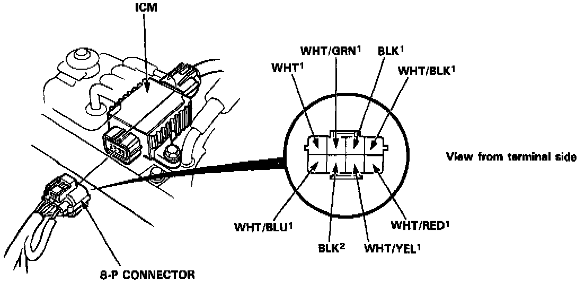
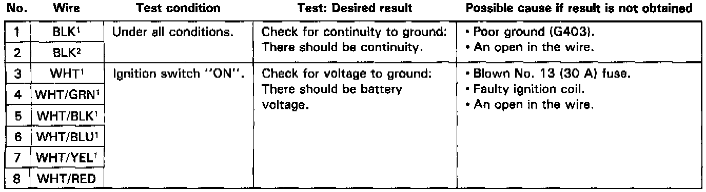

Ignition Control Module: Testing and Inspection
INSPECTIONNOTE: Perform an input test on the ignition control module after finishing the fundamental tests for the ignition system and fuel emission system. The tachometer should operate normally.
Disconnect the 8-P connector from the ignition control module. Inspect the connector terminals to be sure they are all making good contact.


- If the terminals are bent, loose, or corroded, repair them as necessary, and recheck the system.
- If the terminals look OK, make the following input tests at the connector.
- If any test indicates a problem, find and correct the cause, then recheck the system.
- If all the input tests prove OK, the ignition control module must be faulty; replace it.
NOTE: The tachometer should operate normally. Refer to DIAGNOSTIC CHARTS when malfunction indicator lamp is blinking.